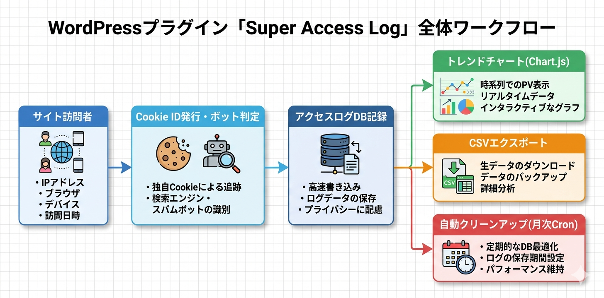

Kashiwazaki SEO Super Access Log マニュアル

Kashiwazaki SEO Super Access Log は、WordPressサイトの訪問者トラッキングとアクセス解析を行うプラグインです。Cookie IDベースの訪問者識別、ボット検出、Chart.jsによるトレンドチャート、CSV出力・インポート機能を提供します。
アクセスログの分析は、サイトのパフォーマンス最適化とSEO戦略の策定に不可欠です。本プラグインはCookieベースの訪問者トラッキングとボット検出を備え、Chart.jsによるトレンドチャートとCSVエクスポートを提供します。
主な機能
アクセス解析
Cookie IDベースの訪問者トラッキングとChart.jsによるトレンドチャート
ログ管理
CSV出力・インポート・データ保持期間設定・自動クリーンアップ
ボット検出
User-Agentパターンでボットを自動識別しフィルタリング
プラグインの特長
- Cookie IDベースの訪問者識別で、同一ユーザーの再訪問を正確にトラッキング
- User-Agentパターンマッチングによるボットの自動識別とフィルタリング
- Chart.jsを使用したアクセストレンドの可視化
- CSVエクスポート・インポートによるデータの外部活用
- データ保持期間の設定と自動クリーンアップによる効率的なストレージ管理
- 20個のAJAXハンドラーによる高速な管理画面操作
- 月次Cronによるログデータの自動最適化
- 不審なアクセスパターンの検出とブロック機能

SEO・GEO（生成AI最適化）への効果
クロールパターンの分析
アクセスログの解析により、検索エンジンのクロールパターンやボットの行動を把握できます。どのページがクロールされているか、クロール頻度はどの程度かを可視化し、クロールバジェットの最適化に役立てることができます。
コンテンツ最適化の判断材料
どのページにトラフィックが集中しているかを把握することで、コンテンツの最適化戦略を立てるための判断材料が得られます。アクセスの多いページの品質向上やアクセスの少ないページの改善に活用できます。
正確なアクセス分析
ボット検出機能により、自動アクセスと実ユーザーのアクセスを区別できます。ボットからのアクセスを除外した正確なトラフィックデータを取得でき、SEO施策の効果測定の精度が向上します。
生成AI（GEO）への対応
AIクローラーのアクセスパターンをモニタリングすることで、AI検索エンジンがどのコンテンツにアクセスしているかを把握できます。この情報をもとに、AIによるコンテンツ発見を促進するための最適化が可能になります。
目次（マニュアル構成）
| ページ | 内容 |
|---|---|
| 概要 | プラグインの機能概要、SEO/GEO効果、動作要件 |
| インストール・初期設定 | インストール手順、基本設定、ボット検出パターン設定 |
| ログ管理 | アクセスログの閲覧、フィルタリング、チャート表示、CSV操作 |
| トラブルシューティング | よくある問題と対処法、動作要件、技術仕様、アーキテクチャ |
動作要件
| 項目 | 要件 |
|---|---|
| WordPress | 5.0 以上 |
| PHP | 7.4 以上 |
| 対応ブラウザ | Chrome、Firefox、Safari、Edge（最新版） |
インストール後すぐに使い始めたい場合は、インストール・初期設定ページに進んでください。